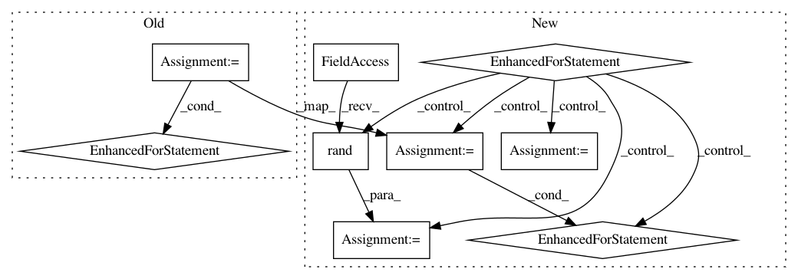

2e448864f54e5d8040221a1bcfa3492a55cc8465,dipy/segment/tests/test_metric.py,,test_distance_matrix,#,218
Before Change
assert_array_equal(D, D.T)
assert_array_equal(np.diag(D), np.zeros(len(data1)))
for i in range(1, len(data1)):
for j in range(i+1, len(data1)):
assert_equal(D[i, j], dipymetric.dist(metric, data1[i], data1[j]))
if __name__ == "__main__":
run_module_suite()
After Change
def test_distance_matrix():
metric = dipymetric.SumPointwiseEuclideanMetric()
for dtype in [np.int32, np.int64, np.float32, np.float64]:
// Compute distances of all tuples spawn by the Cartesian product
// of `data` with itself.
data = (np.random.rand(4, 10, 3)*10).astype(dtype)
D = dipymetric.distance_matrix(metric, data)
assert_equal(D.shape, (len(data), len(data)))
assert_array_equal(np.diag(D), np.zeros(len(data)))
if metric.is_order_invariant:
// Distance matrix should be symmetric
assert_array_equal(D, D.T)
for i in range(len(data)):
for j in range(len(data)):
assert_equal(D[i, j], dipymetric.dist(metric, data[i], data[j]))
// Compute distances of all tuples spawn by the Cartesian product
// of `data` with `data2`.
data2 = (np.random.rand(3, 10, 3)*10).astype(dtype)
D = dipymetric.distance_matrix(metric, data, data2)
assert_equal(D.shape, (len(data), len(data2)))
for i in range(len(data)):
for j in range(len(data2)):
assert_equal(D[i, j], dipymetric.dist(metric, data[i], data2[j]))
if __name__ == "__main__":
run_module_suite()
In pattern: SUPERPATTERN
Frequency: 3
Non-data size: 9
Instances
Project Name: nipy/dipy
Commit Name: 2e448864f54e5d8040221a1bcfa3492a55cc8465
Time: 2015-01-22
Author: marc.cote.19@gmail.com
File Name: dipy/segment/tests/test_metric.py
Class Name:
Method Name: test_distance_matrix
Project Name: keras-team/keras
Commit Name: 9d15c9611570bd3ecab52ed924c69a60ac3b2784
Time: 2016-01-03
Author: julien@fhtagn.net
File Name: tests/keras/layers/test_convolutional.py
Class Name:
Method Name: test_upsampling_2d
Project Name: geomstats/geomstats
Commit Name: 48d65ff340c2190d9d07c454ec314f574d4c886e
Time: 2018-04-24
Author: ninamio78@gmail.com
File Name: tests/test_special_orthogonal_group.py
Class Name: TestSpecialOrthogonalGroupMethods
Method Name: test_quaternion_and_rotation_vector
Project Name: nipy/dipy
Commit Name: 2e448864f54e5d8040221a1bcfa3492a55cc8465
Time: 2015-01-22
Author: marc.cote.19@gmail.com
File Name: dipy/segment/tests/test_metric.py
Class Name:
Method Name: test_distance_matrix